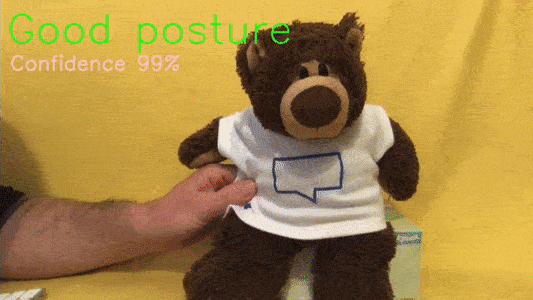
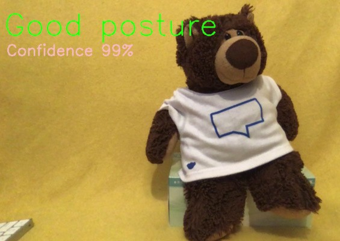
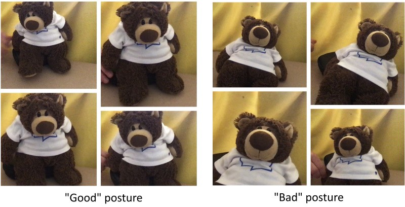

Home office ergonomics — with TensorFlow
Posted

Home office ergonomics — with TensorFlow
Monitor good posture — with machine learning. Ensure proper office ergonomics with TensorFlow, a webcam and OpenCV Python real-time computer vision libraries. Code available at https://github.com/saubury/posture-watch
Real-time posture monitoring — as demonstrated with a teddy bear
If you sit behind a desk for hours at a time, you’re possibly going to slump. This may result in neck and back pain. This can be avoided by teaching a machine to recognise “good” posture from “bad” posture. To encourage better posture, instant feedback with a quick sound every-time poor office ergonomics are observed. Model training and monitoring is handled locally on device.
Live Posture Classification — How does this work?
Machine learning packages available for Python 3
-
Scikit-learn — open source Python machine learning library supporting supervised learning & weightings
-
Tensorflow Keras — high-level API to build and train models
-
OpenCV — library of programming functions for real-time computer vision
Classified Image
Training
A sample of images representing “good” and “bad” posture
Firstly we need to capture photos of “good posture” and “slumped posture”. These images are required as input to train supervised learning algorithm. In capture mode a sample image is captured every second and saved in a training folder. Run the capture mode whilst moving a bit in space to give a variety amongst the images. Press the “space” bar (with the preview frame in focus) to stop capture after about 30 images (30 seconds) have been captured.
Note: the first run may take a few minutes to start
# Capture samples of "good" posture
python posture-watch.py --capture-good
# Capture samples of "bad" posture
python posture-watch.py --capture-slump
Train
Now we have a variety of images representing both “good” and “bad” postures let us train a model. This should only take a few minutes. The more images captured will take longer to train, but should be more accurate.
python posture-watch.py --train
Live Video
With the model trained we can test the classification by running a live video feed from the webcam into the model. The classification and predication confidence is overlaid onto the image. Press the “space” bar (with the preview frame in focus) to stop.
python posture-watch.py --live
Live Video with Sound
If you are satisfied with the accuracy of the predictions, you can constantly run the model and issue a sound alert every-time poor posture is detected.
python posture-watch.py --live --sound
Cleanup
rm -fr train/
Setup
Ensure Python 3, virtualenv and pip are installed.
which python3
virtualenv -p `which python3` venv
source venv/bin/activate
python --version
pip --version
pip install -r requirements.txt
Code
Code available at https://github.com/saubury/posture-watch